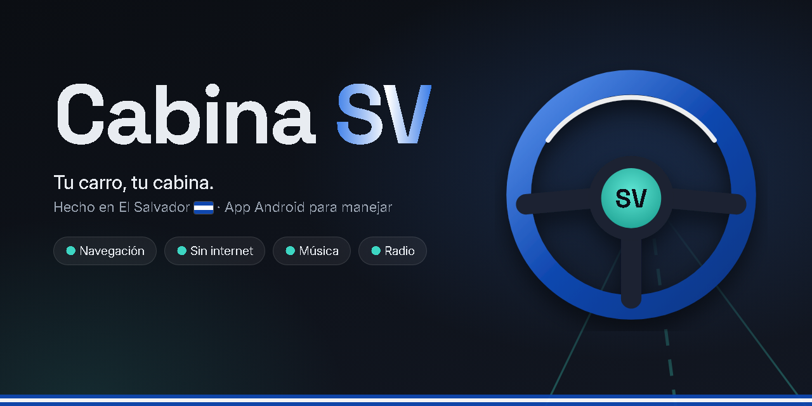
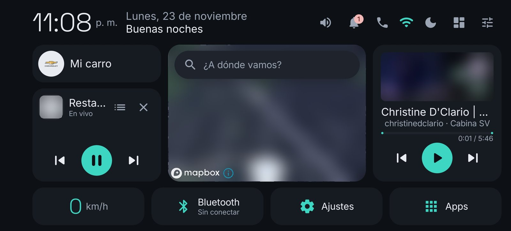
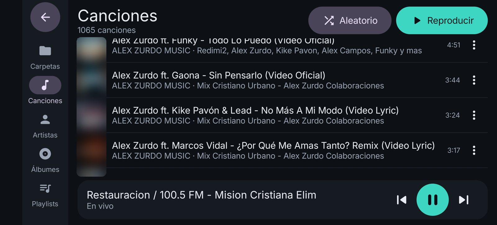
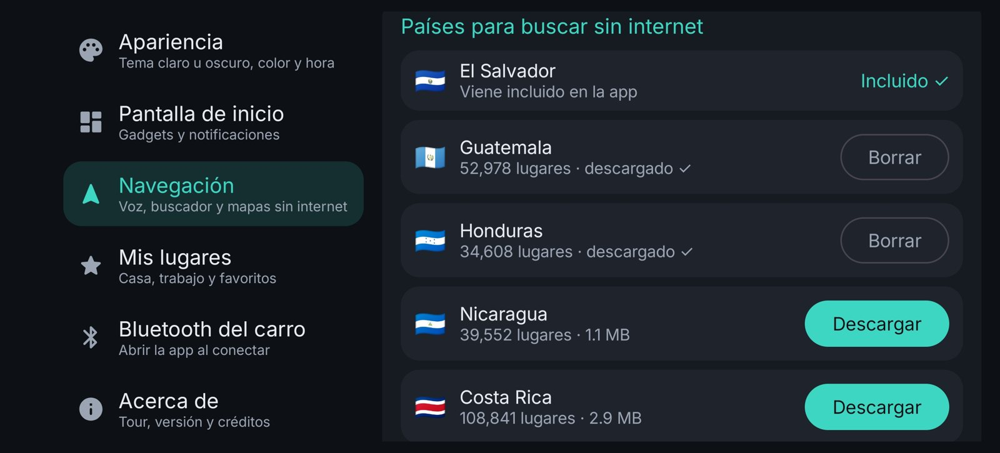
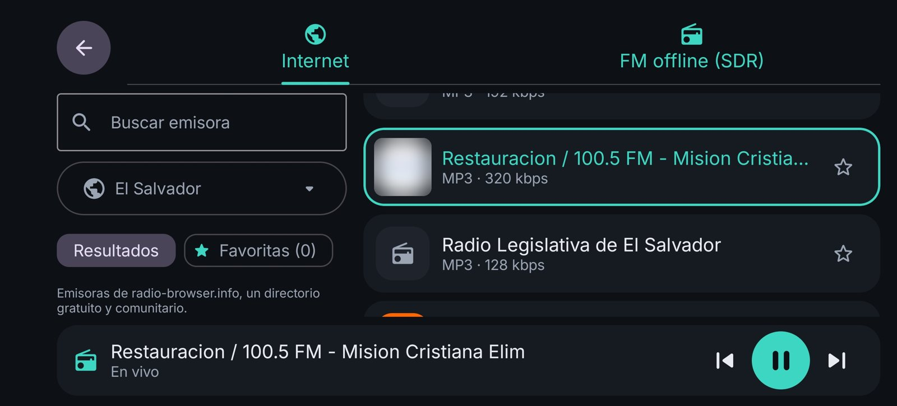

Cabina SV
Cabina SV
Cabina SV
Tu carro, tu cabina.
Convierte tu teléfono Android en el tablero de tu carro: navegación, música, radio y llamadas en una sola pantalla, con botones grandes para verse de un vistazo. Busca lugares aunque no tengas internet.
Próximamente en Google Play · Gratis y sin anuncios · Hecho en El Salvador

Así funciona
Todo en horizontal, pensado para el soporte del carro.






Todo lo que trae
Lo que necesitas al manejar, sin cambiar de app.
🧭 Navegación
- Guía por voz y varias rutas para elegir
- Límite de velocidad de la calle
- Mapa de día o de noche según la hora
- Dictado por voz, también sin internet
- Mis lugares: Casa, Trabajo y favoritos
- Plan B sin internet con Organic Maps
🎵 Música y radio
- Tu música por carpetas y playlists
- Recuerda dónde te quedaste
- Radio por internet con miles de emisoras
- Controla Spotify y YouTube Music
- Desliza la carátula para cambiar de canción
📱 Al volante
- Inicio personalizable con gadgets
- Notificaciones que se cierran solas
- Llamadas a favoritos con un toque
- Se abre sola al conectar el carro
- Tema claro, oscuro o automático
Busca sin internet
El Salvador viene incluido: más de 41 mil lugares, colonias, calles y aeropuertos. Descarga otros países gratis desde la app.
Ficha técnica
Lo que necesitas saber antes de instalarla.
| Versión | 1.0.0 |
|---|---|
| Sistema | Android 8.0 o superior |
| Orientación | Horizontal |
| Tamaño | 55 a 75 MB según el teléfono |
| Idioma | Español |
| Precio | Gratis, sin anuncios ni cuenta |
| Desarrollador | Rafael Aguilar · El Salvador |
| Sin internet | Búsqueda de lugares, dictado por voz y tu música |
|---|---|
| Con internet | Mapa y rutas, radio y descarga de países |
| Mapa | Mapbox, con tu token gratuito personal |
| Datos de lugares | © colaboradores de OpenStreetMap |
| Permisos | Ubicación, música, micrófono, contactos, llamadas, notificaciones y Bluetooth. Para qué se usa cada uno |
Preguntas frecuentes
¿Por qué necesito un token de Mapbox?
El mapa lo da Mapbox. Cada persona usa su propio token gratuito, así nadie gasta la cuota de otro. Se crea en minutos en account.mapbox.com y se pega en la app, que te guía paso a paso.
¿Funciona sin datos móviles?
Sí. Puedes buscar lugares, dictar el destino y escuchar tu música sin internet. Para ver el mapa y calcular rutas necesitas conexión, o puedes abrir la ruta en Organic Maps.
¿Mis datos salen del teléfono?
No hay cuentas ni publicidad. Tus contactos, música y notificaciones se quedan en el teléfono. Solo el mapa (Mapbox) recibe tu ubicación para mostrarte dónde estás y calcular rutas.
¿Dónde la descargo?
Muy pronto en Google Play.